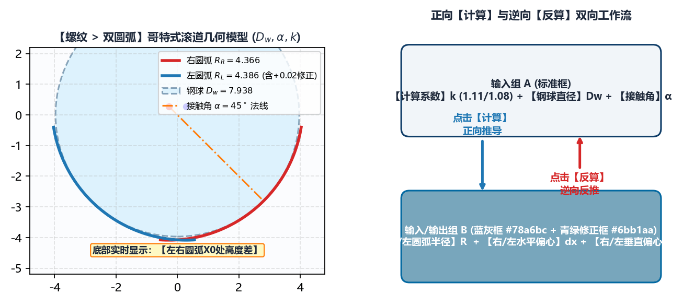

5.2 螺纹：双圆弧（哥特式）齿形正向计算与反算
绘图工具 -> 螺纹 -> 双圆弧 是滚珠丝杠副（内螺纹螺母与外螺纹丝杠轴）加工中最常使用的核心建模模块。滚珠丝杠滚道普遍采用由左右两段偏心圆弧交汇而成的哥特式（Gothic Arch）双圆弧截形，以实现钢球与滚道在 接触角下的四点/两点精准接触并容纳润滑油膜。
一、双圆弧滚道空间几何与参数体系

如上图所示，双圆弧齿形的每一侧由圆弧半径 、圆心水平偏心量 （相对于齿槽对称轴 ）和圆心垂直偏心量 （相对于中径基准线 ）唯一确定。软件提供正向 计算与逆向 反算两种互补的工程建模模式。
二、模式 A：正向 计算（已知钢球直径与接触角，自动推算圆弧与偏心）
当工艺设计给定了滚珠规格与接触角时，使用 计算 按钮：
- 填写顶部 3 项设计输入（白底框）：
计算系数()：下拉选择1.11或1.08（代表理论圆弧半径与钢球半径的比值系数，行业标准常取 ）；钢球直径(，单位：)：滚珠丝杠所使用的精密钢球公称直径（例如3.175、5.953、9.525等）；接触角(，单位：∘^\circ∘）：钢球与滚道曲面的法向接触角（标准值通常为45）。
- 点击中部的
计算按钮： 系统立即按哥特式双圆弧啮合公式自动算出 6 项几何参数并填入中部的 蓝灰色输入框（#78a6bc）：右圆弧半径/左圆弧半径：右水平偏心/左水平偏心：右垂直偏心/左垂直偏心：
- 利用青绿色修正框（
#6bb1aa）进行现场工艺微调： 在每个蓝灰色框右侧，均配有一个#6bb1aa青绿色修正框（默认0）。例如在BNS-5250-2S大螺母磨削中，若试磨后发现双圆弧底部交汇处过深或接触角偏大，无需重算理论值，只需在右垂直偏心/左垂直偏心右侧的青绿框中输入微调量（如-0.008），生成齿形时系统会自动将蓝灰框理论值与青绿框微调值相加！
三、模式 B：逆向 反算（已知图纸圆弧半径与偏心，反推钢球与接触角）
许多主机厂的产品图纸不直接标注 计算系数，而是在剖视图上直接给定滚道圆弧半径 以及圆心偏心距 （如 BNS-0802-M 微型螺母图纸直接给出 ）：
- 直接在 6 个 蓝灰色输入框（
#78a6bc） 中手动输入图纸给定的：右圆弧半径、右水平偏心、右垂直偏心左圆弧半径、左水平偏心、左垂直偏心
- 点击
反算按钮：- 软件自动根据输入的圆弧半径与偏心坐标，逆向解算出对应的等效
钢球直径与接触角并回填至顶部输入框，方便工艺员核验图纸标注是否自洽。
- 软件自动根据输入的圆弧半径与偏心坐标，逆向解算出对应的等效
四、直径信息、螺距信息 与 左右圆弧X0处高度差 校验
直径信息联动规则：工件中径：输入滚道节圆（中径）直径；- 第 2 个直径框（动态标签）：
- 当
基本参数 -> 工件类型为内螺纹时，该标签自动显示为工件大径（输入螺母滚道底部的最大内孔直径，必须大于工件中径）； - 当
基本参数 -> 工件类型为外螺纹时，该标签自动显示为工件小径（输入丝杠轴滚道底部的最小底径，必须小于工件中径）。
- 当
螺距信息：填写工件螺距与工件头数（多头丝杠如双头BNS-5250-2S填写螺距25、头数2）。- 底部状态栏
左右圆弧X0处高度差:判据： 点击左下角生成齿形文件后，面板最下方会实时显示左右两段圆弧在对称中心 交汇处的径向高度差 ：- 当左右圆弧半径与偏心完全对称时，显示
左右圆弧X0处高度差: 0.0 mm； - 若在对左右偏心进行了非对称独立微调后，该值大于
0.005 mm，说明 交点偏移了几何中心，请在右侧画布中放大检视尖底交接处是否平滑。
- 当左右圆弧半径与偏心完全对称时，显示